Fotógrafo
Profissional &
de Vida Selvagem
Localizado em Recife-PE

Localizado em Recife-PE
Desenvolvo projetos fotográficos documentando a fauna brasileira em seus habitats naturais. Trabalho com organizações de conservação para promover a proteção da vida selvagem.
Atuo como fotógrafo independente, registrando a fauna em seu habitat natural e colaborando em projetos de conservação. Minhas imagens são utilizadas em reportagens, exposições e campanhas ambientais.
Participei de expedições fotográficas para registrar a biodiversidade brasileira, contribuindo com imagens para artigos e documentários sobre conservação e sustentabilidade.
Acompanhei pesquisadores no Pantanal para registrar o comportamento das onças-pintadas. O material produzido foi utilizado em estudos e campanhas ambientais.
Aqui estão algumas fotografias que capturei durante as minhas experiências, nas quais posso compartilhar com o mundo e colaborar com projetos incríveis. Todos os meus clicks não caberia aqui, mas deixo os melhores momentos que marcaram minha vida Profissional.
Lobo – Espírito selvagem
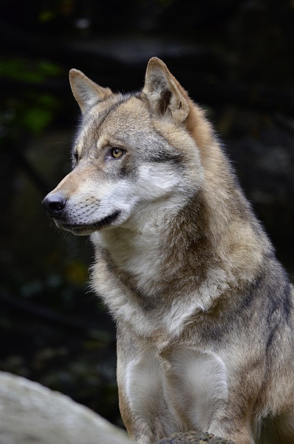Cervo – Elegância na floresta
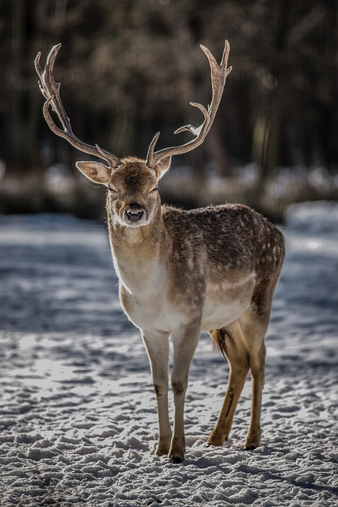Cobra – Olhar hipnotizante
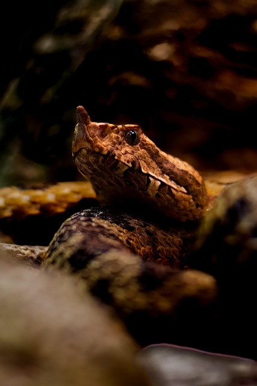Elefante – Força e sabedoria
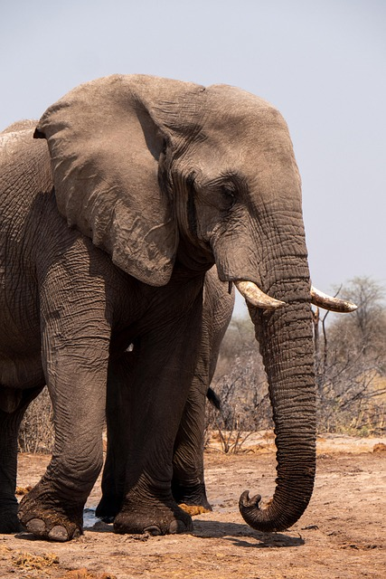Flamingo – Graça em rosa
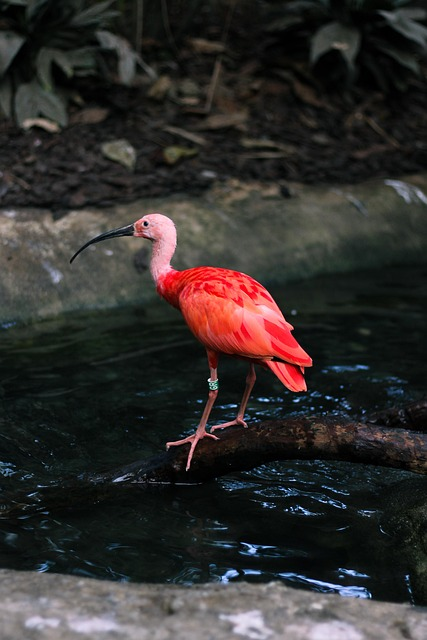Girafa – Altura impressionante
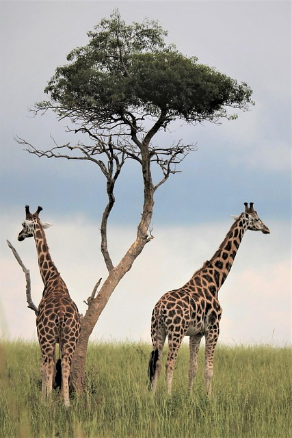Lagarto – Mestre da camuflagem
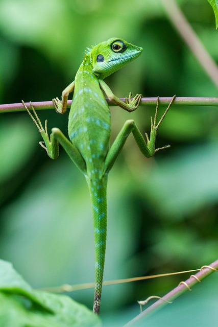Leão – Rei da savana
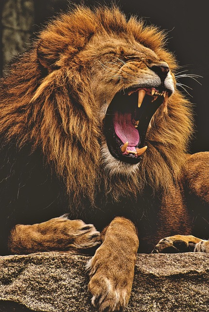Macaco – Brincalhão e esperto

Onça – Predador silencioso
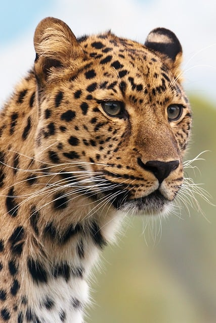Papagaio – Cores vibrantes
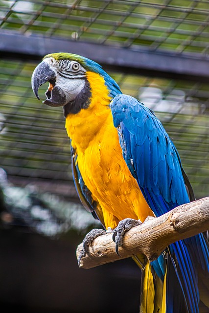Tucano – Bico exuberante
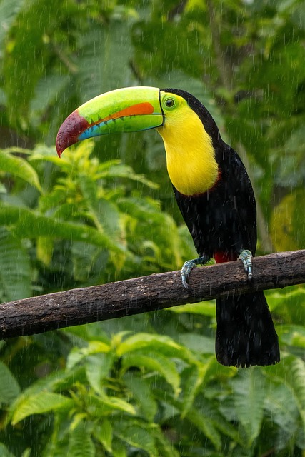Zebra – Listras únicas
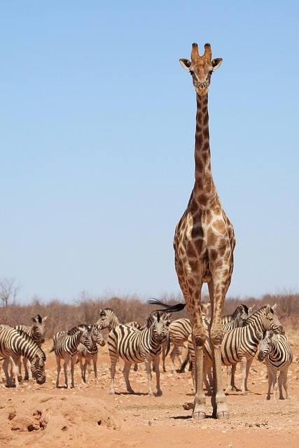Minha mais recente experiência acadêmica foi uma especialização 📸 em Fotografia de Vida Selvagem. Além disso, busco sempre evoluir com cursos e workshops sobre fotografia documental e conservação ambiental.
Sou Pedro Lima, conhecido como "Lobo", sou fotógrafo especializado em vida selvagem. Minha paixão pela natureza e pela conservação me guia na busca por imagens que revelam a verdadeira essência dos animais em seus habitats naturais. Além de ser fotógrafo, gosto de andar de moto e passar tempo com minha família. Tento equilibrar minha paixão pela fotografia com um estilo de vida ativo, sempre buscando novas aventuras e lugares para explorar. Estou sempre em busca de aprender mais e contribuir com a preservação ambiental.